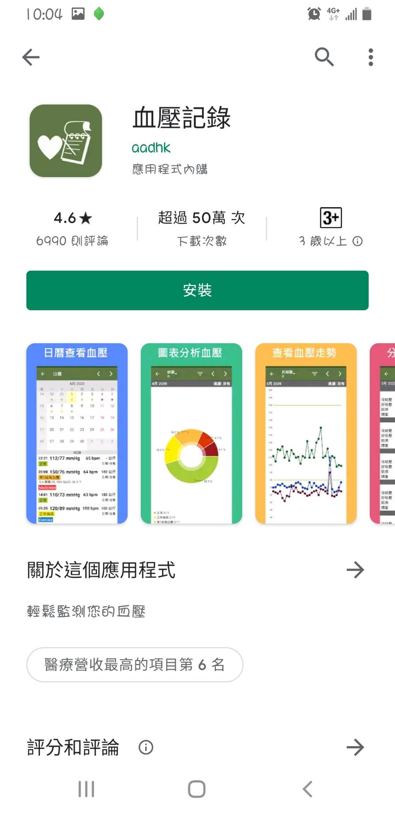
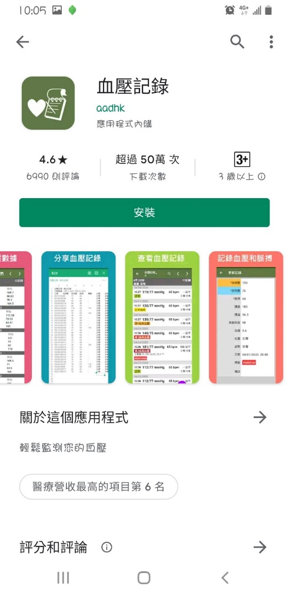
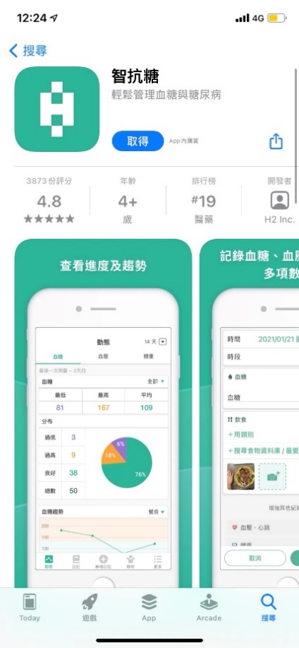
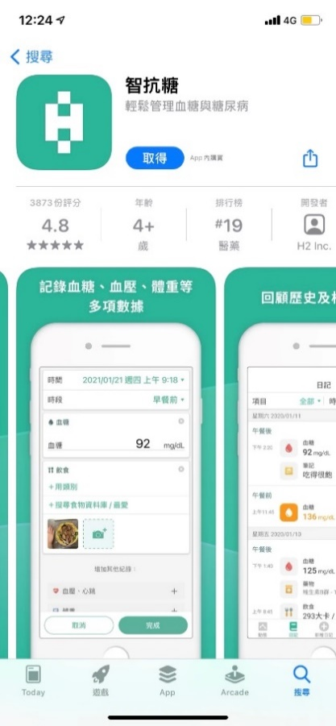
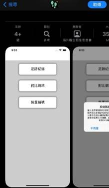
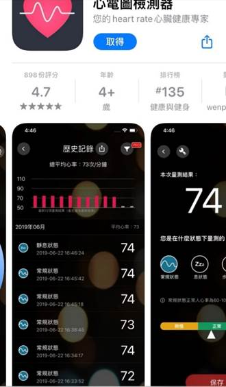
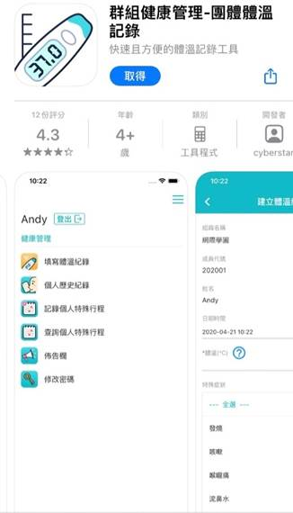

醫學測量及儀表(109-2)第A9組 學期報告第 一 次討論會議紀錄
時間：2021年3月4日13:00~15:00 地點：工學311
主席：陳瑜婷 記錄審訂：陳依廷
出席：10625139 陳瑜婷 10625156 洪子婷 10625256 杜品靜 10844105 陳依廷
主題：藍芽傳輸耳溫槍
Ⅰ.進度報告：
設定報告目標產品、App範本決定
Ⅱ.討論事項：
1.選定欲參考APP範本
2.選定欲設計之儀器
Ⅲ.討論內容：
依廷:大家一起來討論要做甚麼吧!
子婷:好啊~
依廷:那大家有甚麼想法嗎?
瑜婷:我們只要先決定適合的APP範本，還有我們要呈現哪些跟防疫有關的資訊，像是
體溫、症狀等
依廷:好的，了解
品靜:那我們要開始找APP嗎?
瑜婷:對，可以直接結程式下面的圖，把那些當作範本
依廷:大家有找到甚麼適合的APP嗎?不如大家先各自找覺得適合的APP放上來，有空的
人可以回覆一下自己的看法，我邊打成會議記錄
依廷:這是我找到的，「血壓記錄」大約分7個介面包含日曆記錄、查看血壓、
圖表統計、走勢、分析數據、分享記錄、記錄血壓


品靜:我找的是血糖的，可以查看趨勢、進度、記錄、回顧、比較數據還有親友連動等等


瑜婷:這個程式不算多重介面，但我認為足跡記錄這個可以加入APP

子婷:這個是可以測量心率的是否正常，也能在不同狀態下測量

依廷:我們有確定好要做甚麼儀器嗎，或許能利用儀器選出一個最適合的APP
子婷:老師好像有說要跟疫情相關的
瑜婷:有!
品靜:那要跟之前一樣嗎?
依廷:可能要進行微調
品靜:那可能要先看看之前的再討論要怎麼調整
子婷:這樣是要找有關體溫記錄的APP嗎?
依廷:應該是
品靜:是像這種的嗎?

子婷:這種應該可以!
依廷:那我們以品靜最後傳的這個APP為範本OK嗎?
品靜:我覺得OK
子婷:ok
瑜婷:我也OK
Ⅳ.決議事項：
1. 決議APP參考範本為群組健康管理-團體體溫記錄
2. 決議設計藍芽耳溫槍